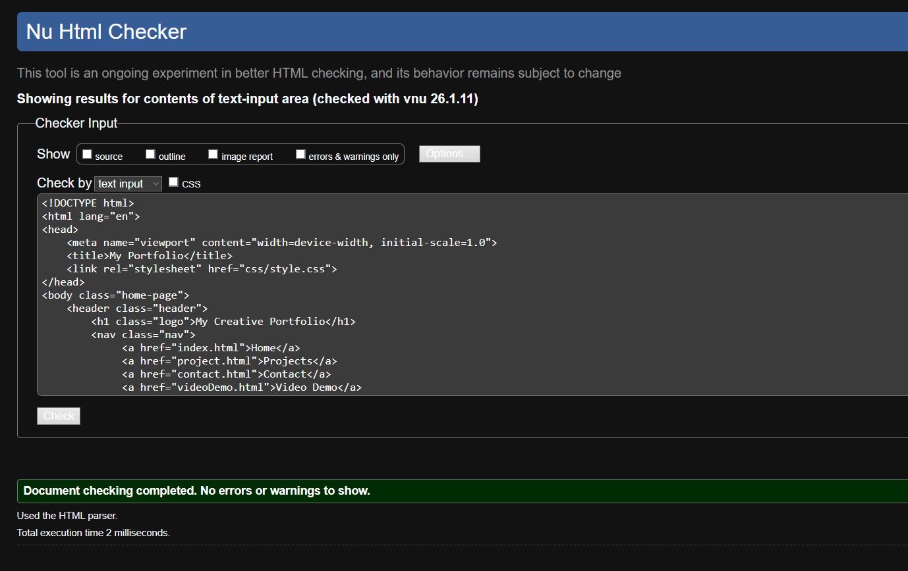
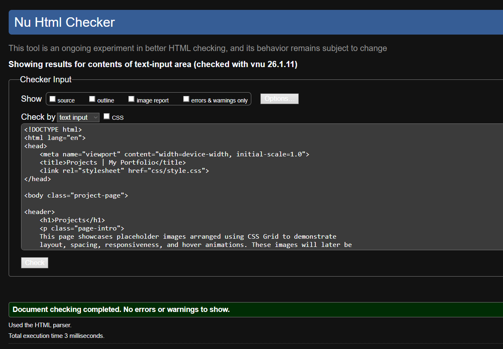
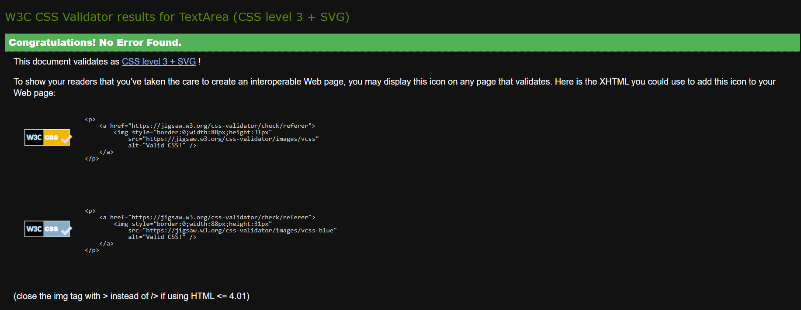

Introduction
This site report explains my experience of learning basic web development during the CSY1063 module. In this module, I learned how to create a responsive portfolio website using HTML, CSS, and GitHub. This report reflects my learning process, including the problems I faced and how I solved them.
Learning Experience
At the start of this module, I had little experience with HTML and CSS.Learning how to structure a webpage using tags such as <header>, <nav>, <main>, <section>, and <footer> was difficult at first. I often made small mistakes that caused the layout to break. However, by practicing regularly and checking my code, I slowly began to understand how things work. Debugging was challenging, but using different tools helped me find and fix errors.
Technical Development
I used clear and logical HTML to make sure the website structure is clear and correct. CSS was used to control layout, colours, spacing, hover effects, and responsiveness. The project page uses a different grid layout to show my understanding of CSS Grid. Media queries were used so the website works well on both desktop and mobile devices. All HTML and CSS files were validated using W3C validation tools, and any errors or warnings were fixed.
GitHub Usage
GitHub was used to manage the development of this project. I created a private repository and committed my work regularly over different days. Each commit recorded changes such as layout updates, styling improvements, and content additions. This helped me understand version control and keep track of my progress.
Use of AI
Generative AI was used in an assistive role during this project. It was used to help explain concepts, identify errors, and suggest improvements. I made sure that I understood all the code and that the final website reflects my own work and learning.
Validation Evidence
Below are screenshots showing successful HTML and CSS validation with no errors.
  Video Demonstration
A short video demonstration of the website can be viewed at the following link: [https://youtu.be/H8rbub9mChI ]
Conclusion
Overall, this module helped me understand the basics of web development. Although I faced difficulties at the beginning, I became more confident in using HTML, CSS, and GitHub. This project helped me improve my technical skills and gave me confidence to continue learning web development in the future.